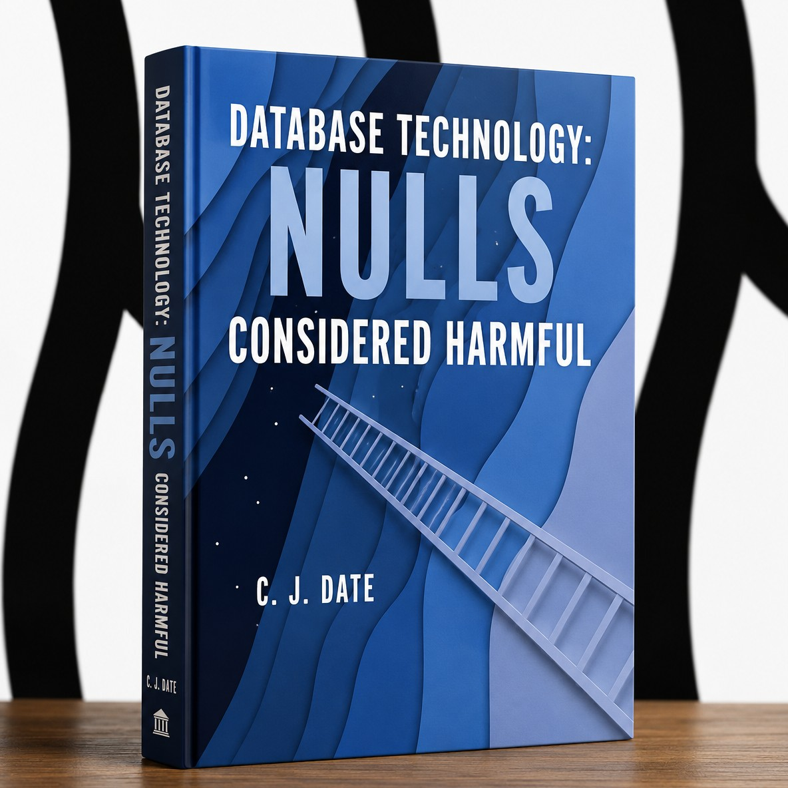

The title image is AI-generated, but the book shown in it is real and was written by a renowned expert.
Capillaries deliberately avoids native NULL support to keep data transformations simple and predictable. This is a conscious design decision, not an oversight.
Capillaries users write business logic in Go and Python. Neither language makes nullable values particularly convenient. Supporting NULLs would mean using pointers, introducing wrapper types such as NullableInt and NullableString, or adding explicit NULL checks throughout user-provided formulas.

Consider a simple calculation:
r.Price * r.Quantity
With nullable values, even this straightforward expression requires additional handling. The same applies to comparisons, string operations, and more complex business formulas.
Whether missing information is represented by NULLs, sentinel values, or validity indicators, business logic still needs to account for it. The difference is where and how that handling takes place.
Without native NULLs, users can represent missing information in two ways: with application-defined sentinel values or with separate validity indicators. These are distinct approaches, each with its own trade-offs.
A sentinel is an ordinary value assigned a special meaning by the application. For example, -1 might represent a missing integer, an empty string might represent missing text, or a special date might indicate an unknown date.
Sentinels require no additional fields and can keep calculations simple. However, they must be chosen carefully to avoid conflicts with legitimate data, and their meaning must be applied consistently throughout the pipeline.
A separate Boolean field can indicate whether a value is present and valid:
if r.PriceValid {
total += r.Price
}
This approach is unambiguous, even when every possible value in the original field is legitimate. Its trade-off is that it requires additional fields and appropriate checks in calculations.
Users can choose either approach or combine them, depending on their data and application requirements.
There is a long-standing debate about NULLs among database researchers and practitioners. Some influential database experts, notably C. J. Date and Hugh Darwen, have argued that SQL-style NULLs are fundamentally problematic and should be avoided. Their position is that missing information should be represented explicitly in the data model rather than by introducing a special marker that can appear in place of an ordinary value.
The practical arguments are familiar: NULLs complicate comparisons and expressions, introduce special cases into query logic, and can make it harder to reason about the results of joins and other operations.
This is not a unanimous position. NULLs are deeply embedded in SQL databases, and many experts consider them a useful, if imperfect, way to represent incomplete information. Still, the recommendation to minimize or avoid NULLs is hardly an unusual one in database design.
Capillaries follows the more conservative approach: keep the internal calculation model free of native NULLs and let application designers decide explicitly how missing information should be represented.
These operations can produce results for which no actual value exists. Capillaries provides ways to detect such situations, for example, through COUNT(). If the count is zero, users know that the default values returned by the operation (zeroes, empty strings, etc.) should not be treated as actual data.
A zero count can serve as a validity indicator. In addition, Capillaries populates non-existent values with configurable default values, which can be used as sentinels.
Not supporting native NULLs internally doesn't prevent Capillaries from exchanging data with systems that use them. NULL handling is supported at input and output boundaries:
CSV input: Readers can recognize configured NULL representations and substitute user-defined default values. This allows external NULLs to be mapped to ordinary Capillaries values.
Preserving missing-information status: If the distinction between a missing value and a legitimate default value matters, users can preserve it using sentinel values, separate validity fields, or both. The appropriate representation is application-defined.
File output: Writers can evaluate user-defined conditions to decide whether a field should be written as NULL. For CSV output, users can configure the textual representation of NULL.
CSV has no universal NULL standard, so the producer and consumer must agree on the representation being used.
This means Capillaries can consume and produce data containing NULLs without supporting NULL as an internal data type or requiring NULL-aware calculations.
CsvReaderSettings.NullValue (JSON/YAML attribute "null_value")
If a CSV field text representation equals this string, it is considered non-existing/NULL and it is
replaced by the "col_default_value" (see below). Default: empty string. For
example, see https://github.com/capillariesio/capillaries/blob/main/pkg/sc/file_reader_def_test.go.
FileReaderColumnDef.DefaultValue (JSON/YAML attribute "col_default_value")
Non-NULL Capilllaries friendly sentinel value to use when a NULL value is found in the input file.
Default: empty string, zero integer or decimal, DefaultDateTime (Jan 1, 1 AD 00:00:00 UTC). For example, look for "col_default_value" in test/data/cfg files.
CsvCreatorSettings.NullValue (JSON/YAML attribute "null_value")
Text string to write to a CSV file for NULL value when "write_null_if_expression" (see below) is TRUE for this
column. Default: empty string.
WriteFileColumnDef.WriteNullIfRawExpression (JSON/YAML attribute
"write_null_if_expression")
Check for a sentinel value. When this expression is not empty and TRUE, correspondent column is replaced with NULL for Parquet
or "null_value" (see above) for CSV. For example, see
https://github.com/capillariesio/capillaries/blob/main/test/data/cfg/lookup/script_quick_csv.yaml
(CSV) and
https://github.com/capillariesio/capillaries/blob/main/test/data/cfg/lookup/script_quick_parquet.yaml
(Parquet).
Supporting NULLs would not eliminate the need to handle missing information. It would simply impose nullable types and additional handling on every user.
Capillaries takes a more practical approach: ordinary Go and Python values, application-defined sentinel values, and explicit validity indicators where needed. Users decide how to represent missing information instead of having a particular mechanism imposed on them.
We believe business calculations should work with ordinary values, without having to account for a special case in practically every expression.
Nothing from
nothing (1994) (Part 4 only)
David McGoveran
Nulls Nullified (2005)
Fabian Pascal
Nulls,
Three-Valued Logic, and Ambiguity in SQL: Critiquing Date’s Critique (2007)
Claude Rubinson, University of Arizona
No More Nulls! (2023)
Yisu Remy Wang, University of Washington
Time to Move on: Querying without Nulls and Bags
(2026)
Molham Aref
Leonid Libkin, University of Edinburgh
Wim Martens, University of Bayreuth